Peruaanse bistro aan de Markt in Delft
Inca Mania
Sabor Peruano
Traditionele gerechten uit Peru in een modern jasje, à la minute bereid in onze open keuken. Van lomo saltado tot ceviche met leche de tigre en een klassieke pisco sour.
- Zondag t/m woensdag
- 13:00 – 20:00
- Vrijdag en zaterdag
- 13:00 – 21:00
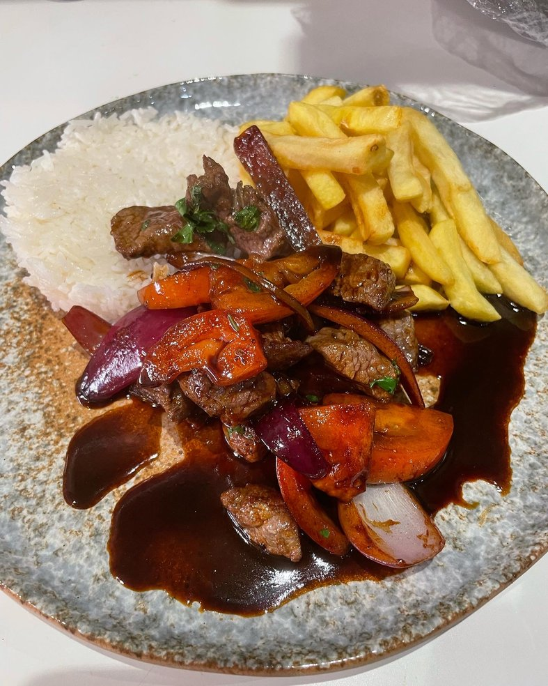
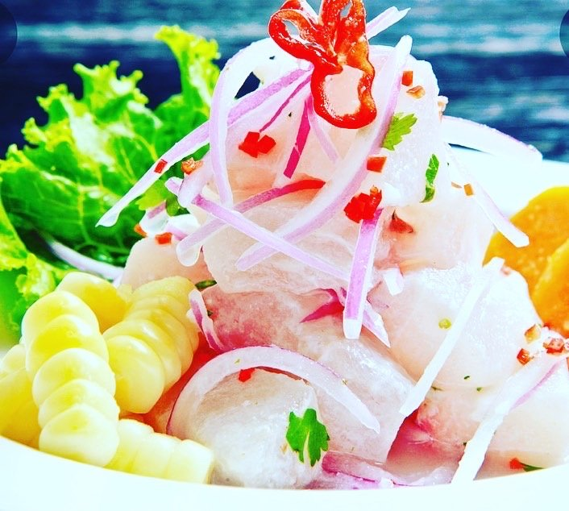
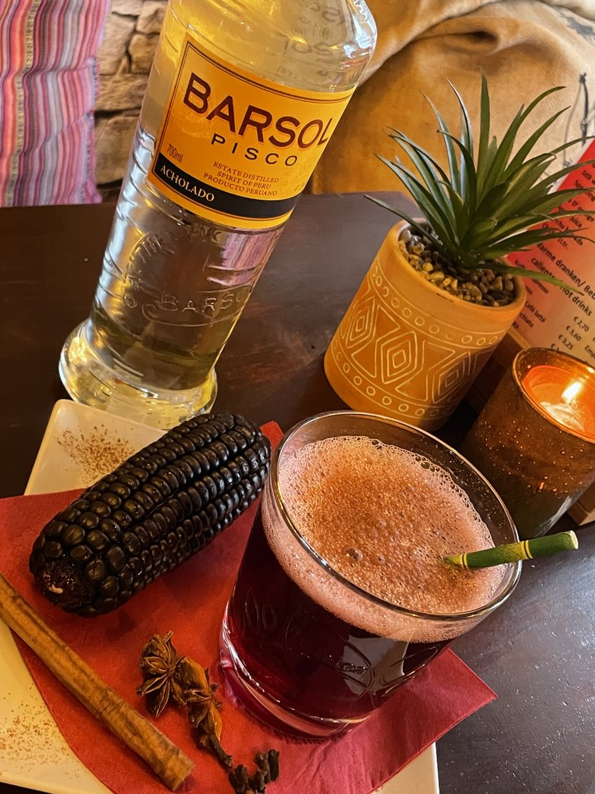
Gekte van de Inca's
Zo vertaal je Inca Mania letterlijk. Wij zijn een bistro die gek is op de tradities, de cultuur en de mensen, maar vooral op de keuken van Peru.
Met typische producten uit Zuid-Amerika delen we graag de ervaring van goed en vooral lekker eten met u. Onze kaart is samengesteld door onze Peruaanse chef Wilder, die traditionele gerechten een modern jasje geeft.
Alles wordt à la minute bereid, waar u bij staat, in onze open keuken. Kom binnen en proef de sfeer en de smaken van Peru. Sabor Peruano zegt het al.
Bienvenidos, en buen provecho.
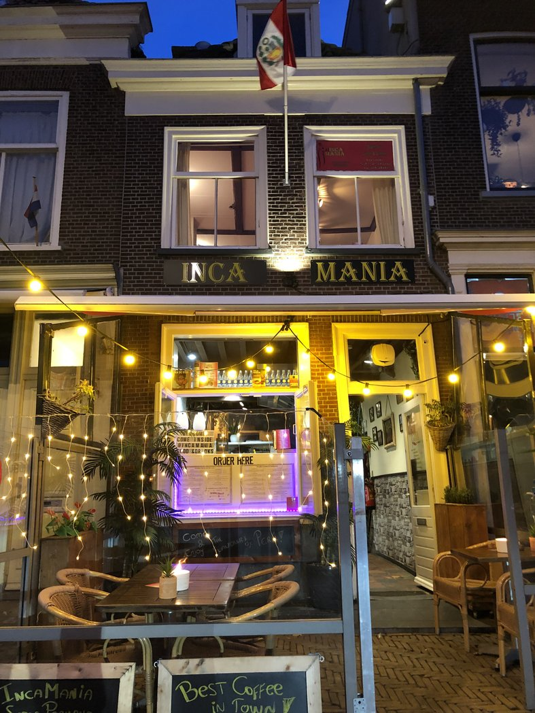
Menukaart
Onze kaart van 2026. De gerechten houden hun Peruaanse naam; daaronder leest u wat er op uw bord komt.
Salades & koude voorgerechten
Ensalada de Yuca
10,95Frisse salade met tomaat, ui, komkommer en gele maïs, met krokant gebakken cassave en een dressing van ají pollería.
Ensalada de Aguacate
10,95Dezelfde frisse salade met romige avocado en een dressing van ají pollería.
Papa a la Huancaína
10,95Een klassieker uit de Andes: plakken gekookte aardappel met romige huancaínasaus.
Ceviche Leche de Tigre
19,95Verse zeebaars gegaard in limoensap met ui, chili en koriander, gemengd met leche de tigre. Met witte maïs, zoete aardappel en canchita.
Ceviche serveren we vrijdag t/m zondag vanaf 18:00.
Warme voorgerechten
Chimichanga de Pollo
12,50Krokante wrap gevuld met gemarineerde kip, gele maïs, jalapeño en kaas, met guacamole en salsa. Een combinatie van Mexico en Peru.
Chimichanga de Carne
12,50Krokante wrap gevuld met gemarineerd rundvlees, gele maïs, jalapeño en kaas, met guacamole en salsa.
Chimichanga Veggie
12,50Krokante wrap gevuld met geroosterde aubergine, gele maïs, jalapeño en kaas, met guacamole en salsa.
Yuquitas
9,50Krokante yuca (cassave) met een mild pittige saus van ají pollería.
Hoofdgerechten
Pollo Asado
19,95Geroosterde kippenpoot, op Peruaanse wijze gemarineerd, met basmatirijst en een frisse salade.
Ají de Pollo
19,95Peruaanse kipstoof in een mild pittige saus van ají en Parmezaanse kaas, met aardappel en rijst.
Asado de Carne
22,25Gemarineerde runderstoof met ají amarillo en ají panca, met rijst en een frisse salade.
Lomo Saltado classico
24,95Gewokte ossenhaas met partjes tomaat, rode ui, ají, sojasaus en koriander, met friet en rijst.
Peruvian Hamburgesa
18,95Gemarineerde runderburger met cheddar en een gebakken ei, met krokante friet en mayonaise.
Saltado Vegetariano
19,95Gewokte champignons, paprika, tomaat, rode ui en ají, met krokante friet en rijst.
Caponata
19,50Geroosterde aubergine met paprika en rode ui, met rijst en salade.
Chicharron de Pescado
20,95Krokante reepjes roodbaars en cassave met een frisse salade en ají pollería.
Pasta's
Tallarines con Pollo
19,95Tagliatelle in een romige huancaínasaus met geroosterde kip.
Tallarines con Lomito
24,95Tagliatelle in een romige huancaínasaus met lomo saltado.
Tallarines con Carne
22,25Tagliatelle in een romige huancaínasaus met gemarineerde runderstoof.
Sandwiches tot 16:00
Asado de Pollo
9,95Broodje met gemarineerde pulled chicken.
Sandwich Asado de Carne
10,95Broodje met gemarineerde runderstoof.
Sandwich Lomo Saltado
11,25Gewokte ossenhaas met tomaat, ui en ají, geflambeerd met sojasaus en koriander.
Sandwich Lomo Inca Mania
11,25Sandwich Roasted veggies
9,95Geroosterde aubergine, paprika en ui.
Sandwich Avocado con Huevo
9,95Romige avocado met een gebakken ei.
Quesadillas con Pollo
9,95Getoaste wrap met cheddar, pulled chicken, tomaat en gele maïs.
Quesadillas con Carne
9,95Getoaste wrap met cheddar, pulled beef, tomaat en gele maïs.
Quesadillas con Veggies
9,75Getoaste wrap met cheddar, geroosterde groenten, tomaat en gele maïs.
Friet met mayonaise erbij
5,95Combineer uw sandwich met friet en mayonaise.
Snacks om te delen
Empanadas met salsa
3 st. 12,95 · 5 st. 19,75Naar keuze met rund, kip of veggie.
Tequeño de Carne 7 stuks
10,95Rolletjes met rundvlees, met salsa.
Tequeño de Pollo 7 stuks
10,95Rolletjes met kip, met salsa.
Tequeño de Queso 7 stuks
10,95Rolletjes met kaas, met salsa.
Nachos de Carne
15,95Tortillachips met geraspte kaas, tomaat, jalapeño en gele maïs, met Peruaanse runderstoof, guacamole en salsa.
Nachos de Pollo
15,95Tortillachips met geraspte kaas, tomaat, jalapeño en gele maïs, met Peruaanse pulled chicken, guacamole en salsa.
Nachos de Veggies
15,95Tortillachips met geraspte kaas, tomaat, jalapeño en gele maïs, met geroosterde groenten, guacamole en salsa.
Salchipapas
9,75Krokante friet met plakjes kippenworst, mayonaise, ketchup en ají pollería.
Desserts
Torta de tres leche
7,50Zachte cake gedrenkt in melk, met slagroom en een vleugje kaneel.
Torta de Limoncello
7,50Limoncellomousse op een bodem van Bastogne-koek, met slagroom en pistache.
Helado tricolor
7,50IJs in drie smaken: vanille, aardbei en lucuma.
Frisdranken
- Cola of Cola Zero2,95
- Fanta of Sprite2,95
- Tonic2,95
- Ice tea sparkling2,95
- Ice tea green2,95
- Ginger ale2,95
- Water plat of bruisend2,95
- Jus d'orange2,95
- Appelsap2,95
- Chicha Morada2,95
- Inca Kola5,95
- Chicha, 1 liter11,95
Warme dranken
- Koffie of espresso3,25
- Dubbele espresso3,95
- Café latte3,85
- Cappuccino3,85
- Espresso macchiato3,50
- Latte macchiato3,95
- Thee2,95
- Verse muntthee3,50
- Verse gemberthee3,50
- Warme chocolademelk3,10
- Slagroom erbij0,25
Bier op fles
- Hertog Jan Pilsener3,50
- Alcoholvrij 0%3,50
- Cusqueña Blond6,50
- Corona6,50
- Radler 2%3,75
Wijn glas / fles
- Verdejo, wit (Spanje)5,95 / 27,95
- Pinot Grigio, wit (Italië)6,50 / 29,50
- Merlot/Tempranillo, rood (Spanje)6,25 / 28,25
- Rosé (Spanje)5,95 / 27,95
Wij schenken geen kraanwater. Eigen consumpties zijn niet toegestaan.
Cocktails & pisco
- Classic Pisco Sour11,95
- Love Potion11,95
- Chicha Sour11,95
- Maracuya Sour11,95
- Tsunami Sour11,95
- Chilcano11,50
- Chicha con Pisco9,95
- Pisco straight up6,50
- Aguardiente5,95
Sommige gerechten kunnen tarwe, ei, noten, melk of andere allergenen bevatten of ermee in aanraking komen. Vraag gerust onze bediening om meer informatie.
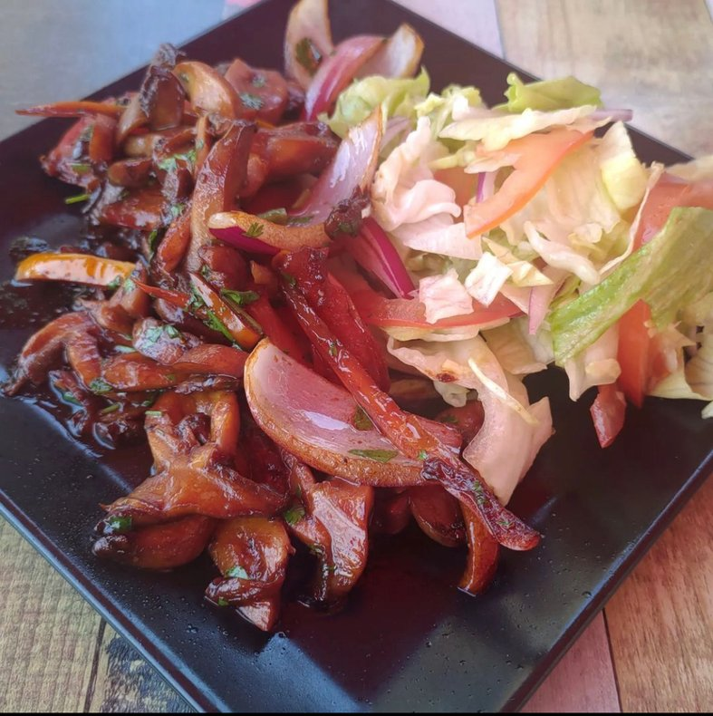
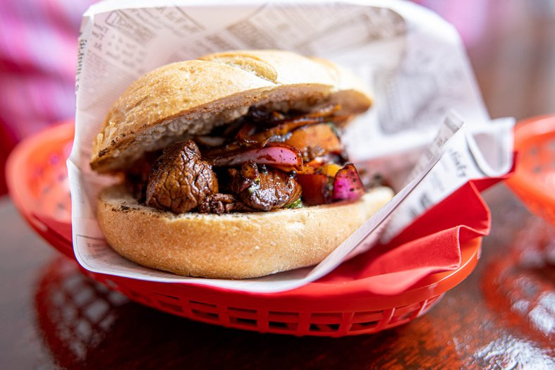
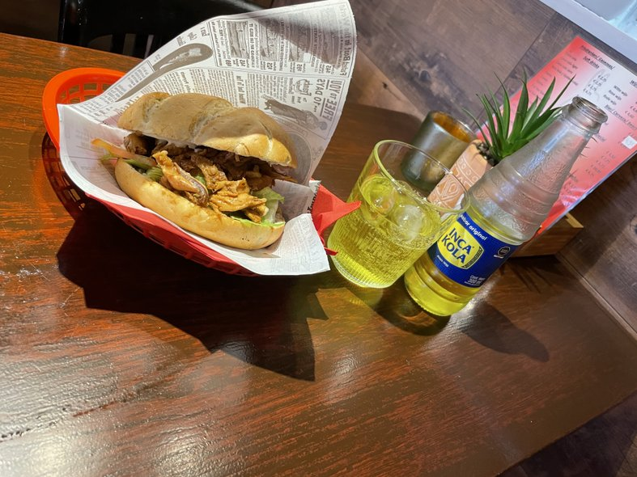
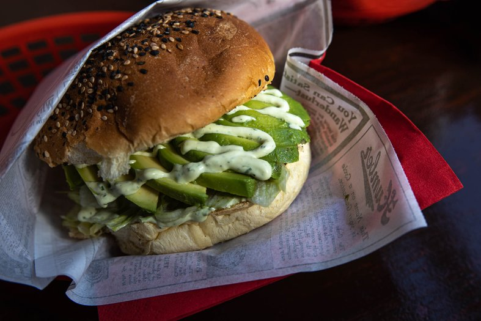
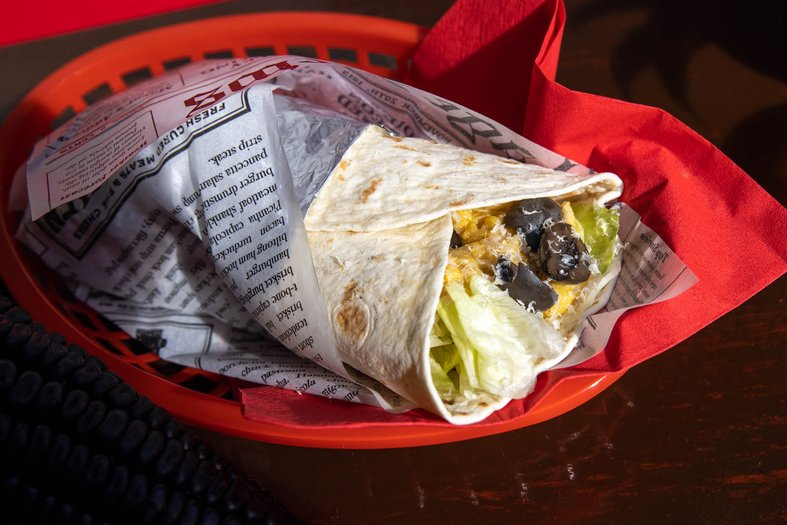
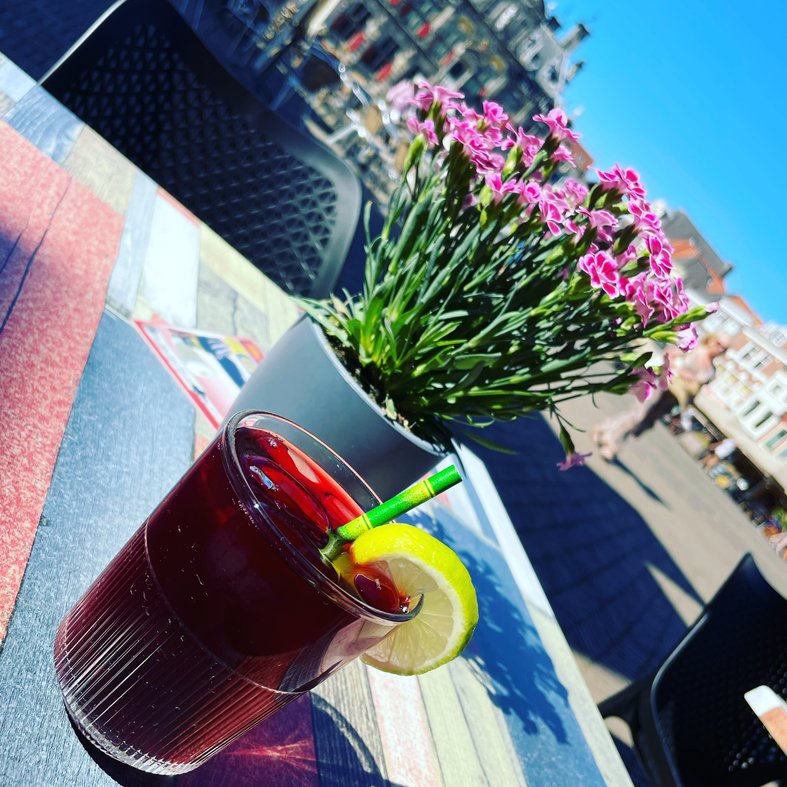
Een pisco sour op de Markt
Bij Peruaans eten hoort een Peruaans glas. Proef een klassieke pisco sour, een chicha sour of een chilcano. Liever zonder alcohol? Neem een chicha morada, gemaakt van paarse maïs, of de knalgele Inca Kola.
- Classic Pisco Sour
- Chicha Sour
- Maracuya Sour
- Love Potion
- Tsunami Sour
- Chilcano
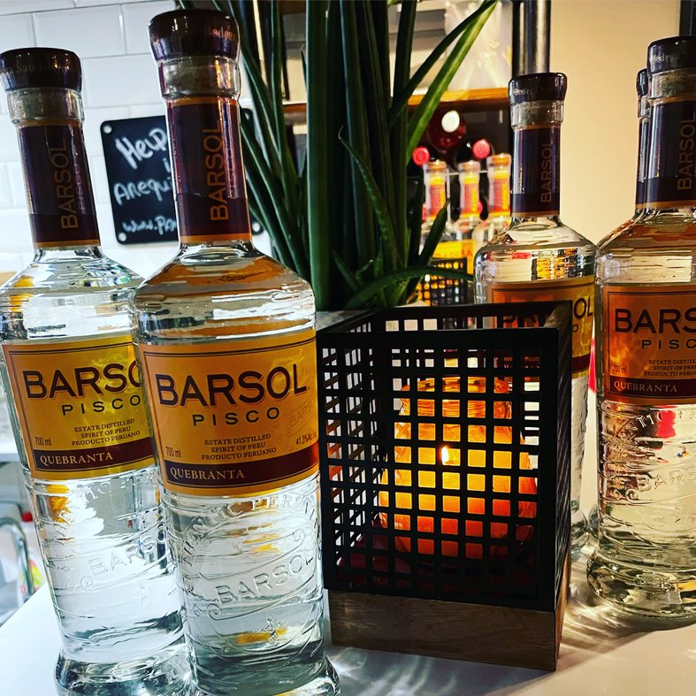
Kom langs
Openingstijden
- Zondag t/m woensdag
- 13:00 – 20:00
- Vrijdag en zaterdag
- 13:00 – 21:00
Ceviche vrijdag t/m zondag vanaf 18:00. Sandwiches tot 16:00.
Adres
Markt 75
2611 GS Delft
Volg ons
Partner: Pan de Vida